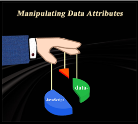
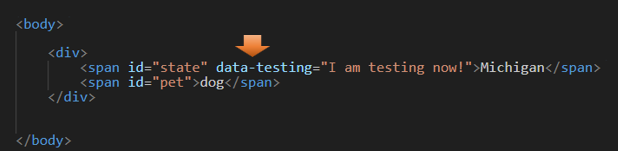
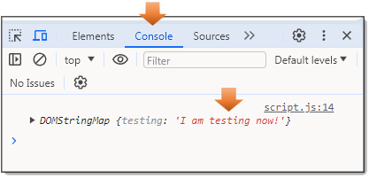

~7 Manipulating Data Attributes~
12/2/2024

What are Data Attributes?
Data attributes are just like normal attributes, except that they start with data-
And what is really awesome about this type of attribute is that you can make them up, and are customizable for what you are trying to do
Another thing is that the stored customize data then can be used to create a better experience for your user. It also eliminates the need to do any special Ajax calls or server-side database queries, and everything can be done right from the JavaScript file.
These custom attributes prefixed with the word “data-“ will be completely ignored by the user agent.
A few Rules
These data- attributes consists of two parts:
- The attribute name should not contain any uppercase letters, and must be a least on character long after the prefix of the word “data”
- The attribute value can be any string.
The data- attribute is a Global attribute and can be used on any HTML element.
Creating the Data Attribute
HTML
<body>
<div>
<span id="state" data-testing="I am testing now!">Michigan</span>
<span id="pet">dog</span>
</div>
</body>
Warning, remember the prefix must be data-, and the value must be in small letters.

In JavaScript
Now we want to be able to grab hold of that data attribute, and we can do that from our JavaScript file. There is a property called dataset that contains all of your customized properties. So, if you call dataset on your constant, you will dive into a pool that contains everything that you made up using the prefix of data-.
Now if we use the console.log method on it, we should be able to see things in the console tab of the Inspect element in your browser.
And as you can see here, it did indeed pull out that string that we wrote in the HTML. Also, notice how when we view it in the console, we do not see the prefix of data-, it only shows the name that we gave it. The User agent did indeed ignore that part of the code.
